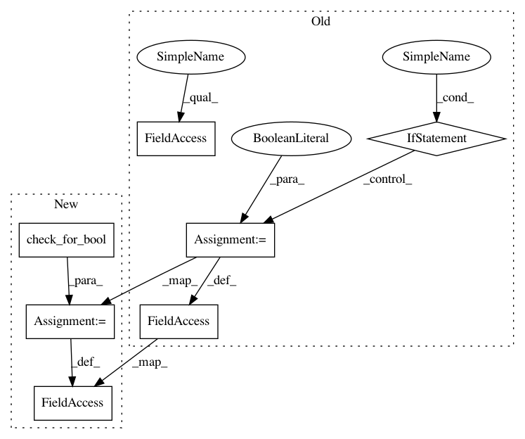

79cc7fb0c44a54ad3c0258a76acff22d5b8fa4f3,autosklearn/pipeline/components/classification/extra_trees.py,ExtraTreesClassifier,__init__,#ExtraTreesClassifier#Any#Any#Any#Any#Any#Any#Any#Any#Any#Any#Any#Any#Any#Any#Any#,15
Before Change
self.max_features = float(max_features)
if bootstrap == "True":
self.bootstrap = True
elif bootstrap == "False":
self.bootstrap = False
self.min_weight_fraction_leaf = float(min_weight_fraction_leaf)
self.min_impurity_decrease = float(min_impurity_decrease)
After Change
self.min_samples_leaf = int(min_samples_leaf)
self.min_samples_split = int(min_samples_split)
self.max_features = float(max_features)
self.bootstrap = check_for_bool(bootstrap)
self.min_weight_fraction_leaf = float(min_weight_fraction_leaf)
self.min_impurity_decrease = float(min_impurity_decrease)
self.oob_score = oob_score
self.n_jobs = int(n_jobs)
In pattern: SUPERPATTERN
Frequency: 3
Non-data size: 7
Instances
Project Name: automl/auto-sklearn
Commit Name: 79cc7fb0c44a54ad3c0258a76acff22d5b8fa4f3
Time: 2018-01-15
Author: feurerm@informatik.uni-freiburg.de
File Name: autosklearn/pipeline/components/classification/extra_trees.py
Class Name: ExtraTreesClassifier
Method Name: __init__
Project Name: automl/auto-sklearn
Commit Name: 229d418b9e473948294e12310cb87a38f32a831c
Time: 2018-01-12
Author: eggenspk@informatik.uni-freiburg.de
File Name: autosklearn/pipeline/components/regression/random_forest.py
Class Name: RandomForest
Method Name: iterative_fit
Project Name: automl/auto-sklearn
Commit Name: 229d418b9e473948294e12310cb87a38f32a831c
Time: 2018-01-12
Author: eggenspk@informatik.uni-freiburg.de
File Name: autosklearn/pipeline/components/data_preprocessing/one_hot_encoding/one_hot_encoding.py
Class Name: OneHotEncoder
Method Name: __init__